library(medusa)
candidates <- hrf_library(tr = tr, preset = "medusa")
hrf_fit <- estimate_crossrun_hrf(
bold = bold,
events = events,
tr = tr,
kernel_grid = candidates,
spatial_groups = parcel_ids,
pooling = "parcel",
selection_mode = "soft_average"
)Step 1: Cross-Run HRF and Noise Estimation
Learning out-of-sample neurovascular shapes and run-specific AR(p) noise covariance
3.1 Overview
In task fMRI, neural events are observed through a regional hemodynamic response function (HRF) that delays and smooths activity over 15–30 seconds, superimposed on serially correlated scanner and physiological noise. Both properties vary across brain territories and scans: sensory and subcortical regions often peak 1–2 seconds earlier than association cortex, while CSF-adjacent cortex exhibits stronger temporal autocorrelation than deep gray matter.
Step 1 (hrf_library() + estimate_crossrun_hrf()) estimates both components before deconvolution begins. To keep vascular shape estimation independent of the noise in the run being deconvolved, Step 1 uses leave-one-run-out cross-fitting: for each target run \(r\), it evaluates a physiological library of candidate HRFs using only the participant’s other runs (\(s \neq r\)), pools shape evidence across parcels or local cortical neighborhoods, and forms a regularized composite HRF that shrinks smoothly back toward a canonical reference where task signal is weak. Holding that cross-fitted HRF fixed, Step 1 then estimates run \(r\)’s own stationary \(\text{AR}(p)\) noise parameters on task-adjusted residuals.
NotePosition in the MEDuSA Pipeline
Preprocessed BOLD + Event schedule \(\longrightarrow\) Step 1 (estimate_crossrun_hrf) \(\longrightarrow\) hrf_fit S3 object \(\longrightarrow\) Step 2 (deconvolve_crossrun_hrf)
The walkthrough below develops Step 1 across four substeps—from defining a single HRF basis curve (1.1), to cross-run candidate scoring (1.2), spatial evidence pooling (1.3), and post-selection \(\text{AR}(p)\) noise estimation (1.4)—highlighting the modeling choice at each stage.
3.2 Goals, Inputs, and Outputs
3.2.1 Goals of Step 1
- Estimate regional HRF timing, dispersion, and undershoot out of sample: Learn each target run’s vascular filter from training runs (\(s \neq r\)) so filter selection does not adapt to target-run noise.
- Stabilize shape selection in low-SNR regions: Borrow evidence across parcels or geodesic gray-matter neighborhoods and shrink uncertain regions smoothly toward a canonical reference waveform.
- Separate hemodynamic shape from serial noise autocorrelation: Fit run-specific \(\text{AR}(p)\) cascade parameters (\(\rho, \psi_1, \dots, \psi_4\)) after projecting out task responses and nuisance drift under the learned HRF.
- Bundle forward timing and noise metadata for downstream steps: Record run clocks, observation masks, composite HRFs, and noise parameters in a single
"crossrun_hrf"object carried forward into Steps 2–4.
3.2.2 Inputs: What Step 1 Receives and Why
| Input | Structure | Why It Is Set Up That Way |
|---|---|---|
bold |
Named list of numeric matrices (time × voxel), one per run, or a "medusa_nifti_ts" object from read_nifti_ts() / read_fmriprep_subject() |
Keeping runs as separate list elements defines the leave-one-run-out folds (\(s \neq r\)), supports unequal run lengths, and prevents AR filters or HRF convolution tails from crossing run boundaries. |
events |
Named list of data.frames (onset, optional duration, condition) matching names(bold) (or a combined BIDS event table) |
Event timestamps anchor neurovascular delay without needing behavioral or computational trial predictors, keeping downstream hypothesis variables unseen during HRF estimation. |
tr & time_offset |
Positive scalar TR (s); scalar or per-run acquisition start time (s) | Maps continuous event times in seconds onto discrete acquisition bins with sub-TR fractional interpolation. |
kernel_grid |
Numeric matrix (L_hrf × K) from hrf_library(), with column 1 as canonical reference |
Pre-discretizes normalized candidate HRF waveforms onto the acquisition tr grid for batched evaluation and provides column 1 as a well-defined canonical baseline (fallback_kernel = 1L). |
valid_rows & nuisance |
Optional per-run logical masks (length == nrow(bold[[r]])) and numeric nuisance matrices (or a "medusa_confounds" object from read_fmriprep_confounds()) |
Marking censored frames with valid_rows = FALSE keeps every retained volume at its true physical timestamp while excluding high-motion frames from regression and likelihood scoring; nuisance removes motion and physiological drift alongside run intercepts and linear trends. |
pooling, spatial_groups, & spatial_graph |
pooling = c("voxel", "parcel", "graph"); optional parcel vector or "medusa_spatial_graph" from build_spatial_graph() |
Specifies how out-of-sample HRF scores and REML noise parameters borrow strength across space—either within nominal parcels ("parcel"), across local 26-connected geodesic neighborhoods ("graph"), or at single voxels ("voxel"). |
3.2.3 Outputs: What Step 1 Produces and Why It Is Set Up That Way
estimate_crossrun_hrf() returns an S3 object of class "crossrun_hrf" whose elements map directly to their roles in Steps 2–4:
| Output Component | Structure | Why It Is Set Up That Way |
|---|---|---|
selected_kernels |
Named list (by target run) of L_hrf × voxel matrices |
The realized HRFs used in Step 2. Storing a waveform matrix per run and voxel accommodates leave-one-run-out folds and represents continuous soft_average blends directly. |
kernel_weights |
Named list of K × voxel unit-sum weight matrices |
Records the candidate weights combining columns of kernel_grid into selected_kernels, making composite HRFs transparent and reproducible. |
selections |
Named list of per-run data.frames (voxel, parcel, kernel_index, status, best_adjusted_partial_r2, selected_task_p, n_compatible_shapes, stability) |
Summarizes out-of-sample task fit and compatibility diagnostics, and supplies out-of-sample task SNR metrics to Step 2 for automatic regularization tuning. |
noise |
Named list of per-run data.frames (voxel, group, rho, psi1–psi4, noise_sd, method, n_voxels) |
Stores own-run stationary \(\text{AR}(p)\) cascade parameters separately per run so scanner autocorrelation can vary across scans while grouping matching (HRF, AR) units into shared linear-operator strata. |
training_runs & signal_status |
Named list of training-run ID vectors; per-run sufficiency summary | Documents cross-fitting provenance confirming which runs trained each target run’s HRF. |
specification, spatial, voxel_map, & geometry |
Stored events, nuisance, valid_rows, tr, resolved spatial graph, and NIfTI header geometry |
Carries timing, censoring masks, neighborhood topology, and volumetric NIfTI coordinates automatically into Steps 2–5. |
3.3 Step-by-Step Walkthrough: Substeps and Choice Points
3.3.1 1.1 Construct a physiological HRF candidate library
Consider a single brief neural impulse at \(t = 0\). In a vascular territory with impulse response \(h\), that event evokes a delayed, smooth BOLD deflection (Figure 3.2). Rather than estimating unconstrained free FIR parameters on noisy runs, hrf_library() spans plausible neurovascular shapes using a low-dimensional family of two-gamma waveforms varied across peak delay, width (dispersion), and post-stimulus undershoot depth (Figure 3.1), placing the standard canonical shape \((6\text{ s}, 1.0, 6)\) in column 1.
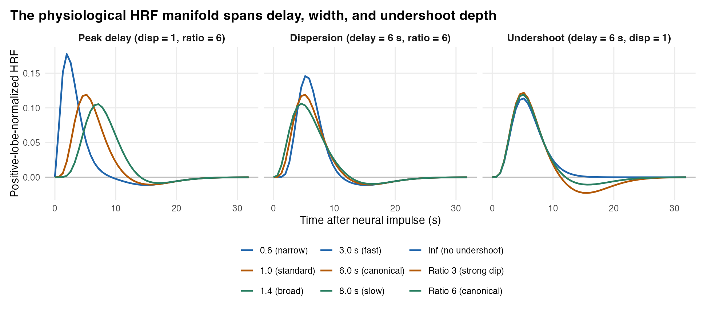
hrf_library(..., preset = "medusa") under positive-lobe normalization: peak delay (left), width/dispersion (middle), and post-stimulus undershoot depth including zero-undershoot subcortical shapes (right).
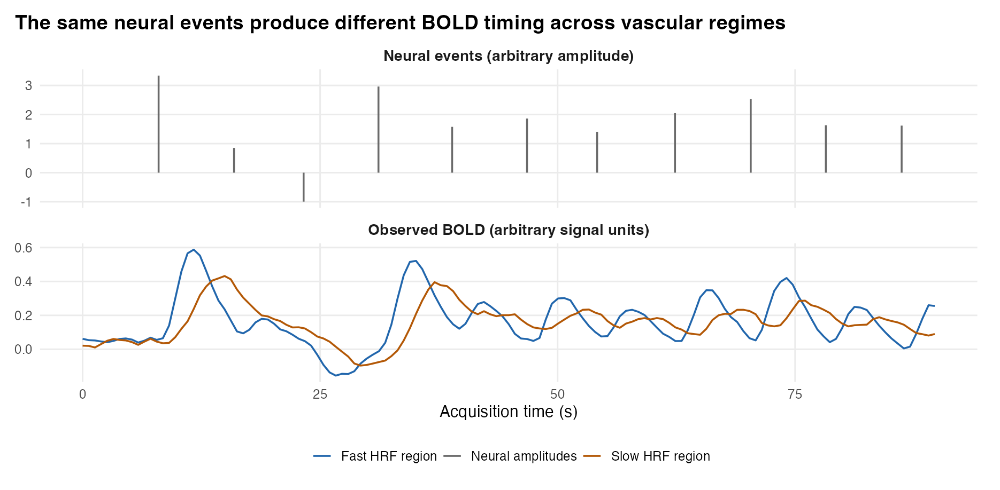
TR = 0.65 s).
Because deconvolution recovers latent amplitudes relative to the scale of \(h\), candidate waveforms require a shared normalization rule. Under preset = "medusa", each candidate is normalized by its positive-lobe sum (\(\sum_{t: h_t > 0} h_t = 1\)). Compared with signed-sum normalization (\(\sum_t h_t = 1\)), positive-lobe normalization keeps the positive BOLD peak comparable between cortical waveforms with a venous undershoot and subcortical waveforms without one (undershoot_ratio = Inf), so regional undershoot differences do not rescale recovered neural amplitudes.
Choice point — Candidate library (preset): Use hrf_library(tr, preset = "medusa") (~44 maximin-pruned 3D candidates spanning \(2.5\text{--}8.0\text{ s}\) delays) as the standard choice across cortical and subcortical studies. Switch to preset = "canonical_27" when restricting strictly to cortical delays (\(4.0\text{--}8.0\text{ s}\)) with a fixed undershoot ratio, or pass a 1-column library (candidates[, 1, drop = FALSE]) when benchmarking against a fixed canonical HRF under matched downstream settings.
3.3.2 1.2 Score candidate HRFs out of sample across runs
Suppose a participant completes \(R = 3\) task runs. If we selected the best-fitting HRF on Run 1 and immediately deconvolved Run 1 with that selected filter, random noise peaks in Run 1 would pull the filter toward themselves and inflate apparent trial effects. Instead, for each target run \(r\), estimate_crossrun_hrf() scores the \(K\) library candidates exclusively on training runs \(s \neq r\) (Figure 3.3). Consequently, even strong synthetic perturbations added to bold$run1 leave Run 1’s learned HRF weights unchanged to machine precision (0; Figure 3.4).
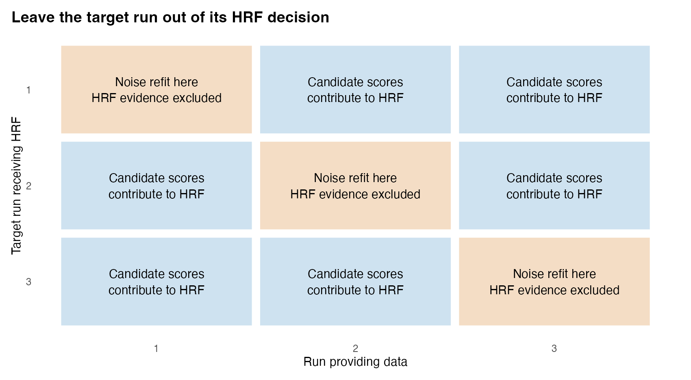
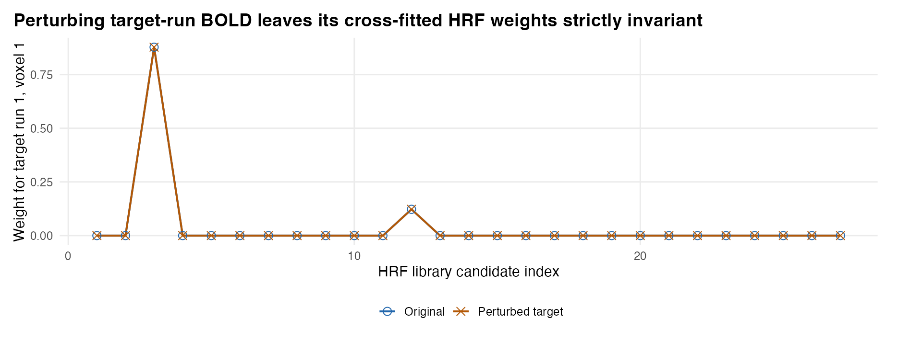
On each training run \(s \neq r\), MEDuSA whitens usable observations under a first-pass noise filter, projects out nuisance drift, and convolves the event schedule with candidate \(h_m\) to compute degree-of-freedom-adjusted partial \(R^2\) and an effective-DF \(F\)-test (selected_task_p; Figure 3.5).
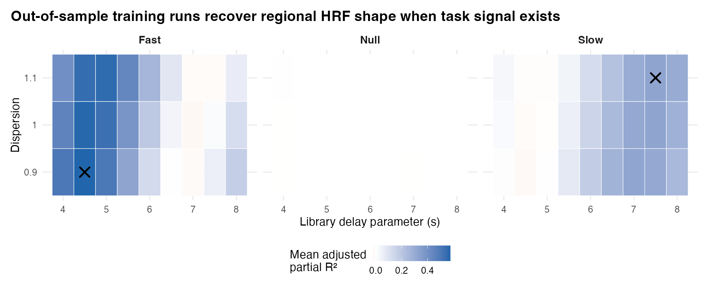
Fast truth: \(4.5\text{ s}, 0.9\); Slow truth: \(7.5\text{ s}, 1.1\); Null: pure \(\text{AR}(3)\) noise). Crosses mark generating parameters.
To build that training regression design without touching external behavioral covariates, MEDuSA needs an assumption about how event amplitudes behave across trials:
- Under
amplitude_model = "condition", all events of a given condition share one mean amplitude per run. When events evoke a consistent positive (or negative) deflection, this 1-column-per-condition design has maximal degrees of freedom and fast runtime. - Under
amplitude_model = "trial", each event receives its own free amplitude (evaluating one condition freed at a time in multi-condition designs to avoid collinearity). This allows regions whose responses fluctuate symmetrically around zero—such as signed prediction-error signals whose mean response is zero—to express strong unsigned trial variance and identify their true HRF (Figure 3.6).
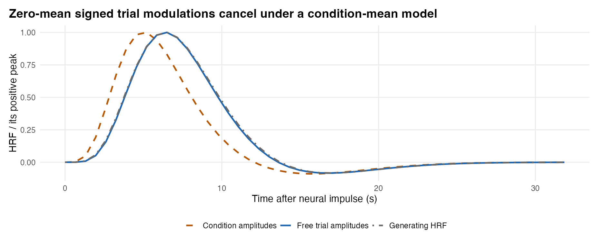
amplitude_model = "condition" vs. "trial"): freeing trial amplitudes recovers the true \(7.5\text{ s}\) HRF where a condition-mean regressor averages out to zero.
Choice point — Training amplitude model (amplitude_model): Choose "condition" when task events evoke a reliable main-effect activation (e.g., visual cues, motor presses, block transitions). Choose "trial" whenever key regions may encode zero-mean signed fluctuations around baseline without a strong condition-mean offset.
3.3.3 1.3 Pool spatial evidence and form a composite HRF
At the single-voxel level, BOLD noise makes discrete candidate selection jittery across neighboring voxels (Figure 3.7). However, averaging raw BOLD time series across a parcel before scoring HRFs can cancel signals if sub-regions carry opposite task signs. Step 1 resolves this by pooling squared candidate evidence (precision-weighted adjusted partial \(R^2\) profiles) rather than raw time series: voxels with positive and negative task effects both produce positive \(R^2\) peaks at the same vascular delay and reinforce one another cleanly.
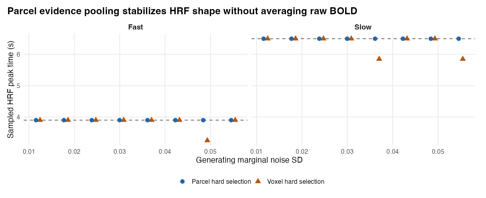
0.012 to 0.055). Parcel pooling eliminates noisy single-voxel jumps.
Once pooled candidate scores are combined across training runs, Step 1 converts them into a target-run HRF waveform using two calibrated safeguards:
- Task-evidence gating and Empirical-Bayes shrinkage: Regions without calibrated task support across training runs (
Nullin Figure 3.5 andv17in Table 3.1) remain at the canonical reference (fallback_prespecified), while regions with moderate task support blend smoothly away from column 1 in proportion to departure confidence. - Soft composite averaging (
selection_mode = "soft_average"): Instead of snapping discontinuously to a single grid column ("hard"), compatible candidates near the maximum receive Boltzmann weights scaled by cross-run score uncertainty—interpolating vascular delays smoothly between discrete grid points (Figure 3.8).
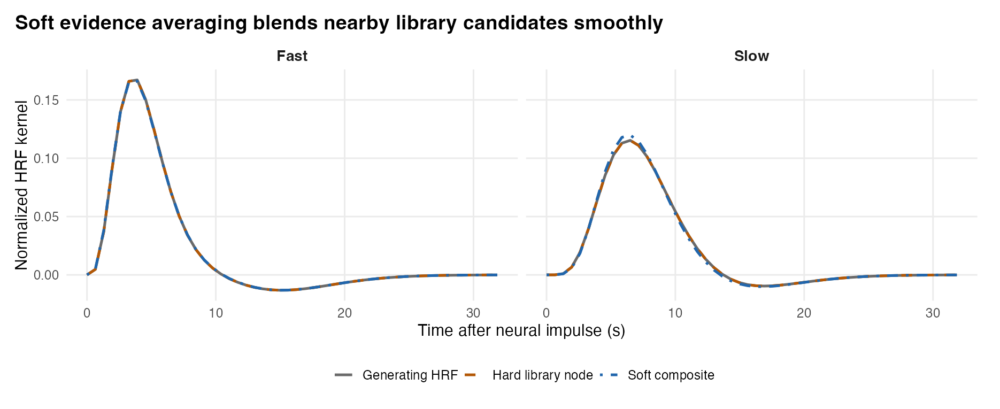
soft_average composite HRFs for the Fast and Slow parcels in Run 1.
Show supporting code
sub_sel <- subset(sel, run == "run1" & voxel %in% c("v01", "v09", "v17"))
sub_sel$task_p_fmt <- ifelse(
sub_sel$selected_task_p < 1e-99,
"< 1e-99",
sprintf("%.3g", sub_sel$selected_task_p)
)
knitr::kable(
sub_sel[, c("voxel", "parcel", "kernel", "status", "best_adjusted_partial_r2", "task_p_fmt", "n_compatible_shapes", "stability")],
col.names = c("Voxel", "Parcel", "Top Node", "Status", "Best Adj. R2", "Task p", "Compat. Shapes", "Stability"),
align = c("l", "l", "l", "l", "r", "r", "r", "l"),
digits = 3, row.names = FALSE
)selections.csv).
| Voxel | Parcel | Top Node | Status | Best Adj. R2 | Task p | Compat. Shapes | Stability |
|---|---|---|---|---|---|---|---|
| v01 | Fast | hrf_3 | pooled_parcel | 0.905 | < 1e-99 | 1 | compatible_training_runs |
| v09 | Slow | hrf_26 | pooled_parcel | 0.758 | < 1e-99 | 4 | compatible_training_runs |
| v17 | Null | hrf_1 | fallback_prespecified | -0.024 | 1 | 27 | compatible_training_runs |
Choice point — Spatial pooling (pooling) and composite rule (selection_mode): Pair selection_mode = "soft_average" with the spatial pooling mode matched to your representation:
pooling = "parcel"(withspatial_groups = parcel_ids) pools uniformly within predefined ROIs or homogeneous parcels.pooling = "graph"(withparcel_boundary = "soft") on volumetric"medusa_nifti_ts"inputs builds a 26-connected in-mask geodesic lattice graph (build_spatial_graph()), pooling candidate profiles bilaterally across concordant gray-matter neighbors while stopping at sulcal CSF gaps and functional borders (see Spatial Graph Pooling).pooling = "voxel"keeps single-voxel HRF fits for task-supported voxels (using parcel fallback on low-SNR voxels when an atlas is attached).
3.3.4 1.4 Refit run-specific \(\text{AR}(p)\) noise covariance on task-adjusted residuals
With each target run’s out-of-sample HRF \(\hat{h}^{(-r)}\) fixed, the final substep estimates run \(r\)’s own serial noise structure. Why wait until after HRF selection to estimate noise? Evoked BOLD waves evolve slowly over time; if residuals were formed under a misspecified canonical HRF (for example, applying a \(6.0\text{ s}\) kernel to a \(4.5\text{ s}\) Fast region), unmodeled task-timing mismatch would leak into the residuals and bias estimated autocorrelation upward.
Using \(\hat{h}^{(-r)}\), estimate_crossrun_hrf() projects out run intercept/trend, user nuisance columns, low-frequency \(<1/128\text{ Hz}\) DCT drift cosines, free-trial responses, and HRF Taylor derivatives, then performs a two-pass pooled REML fit within contiguous unmasked segments of valid_rows[[r]]. Under noise_model = "ar1", this fits a stationary \(\text{AR}(1) \times \text{AR}(q)\) cascade \((1 - \rho B)(1 - \sum_{j=1}^q \psi_j B^j)\varepsilon_t = u_t\) (\(q \le 4\) selected adaptively for multiband sampling rates). As shown in Table 3.2 and Figure 3.9, refitting under the cross-fitted HRF recovers the true \(\text{AR}(3)\) cascade (\(\rho = 0.65, \psi_1 = 0.20, \psi_2 = -0.30\)) accurately across Fast, Slow, and Null parcels and whitens residual autocorrelation across all lags.
Show supporting code
sub_n <- subset(noise_tbl, run == "run1" & voxel %in% c("v01", "v09", "v17"))
knitr::kable(
sub_n[, c("voxel", "group", "rho", "psi1", "psi2", "noise_sd", "method", "n_voxels")],
digits = 4, row.names = FALSE
)noise.csv) compared against generating parameters (rho = 0.65, psi1 = 0.20, psi2 = -0.30, sd_vox[1] = 0.012).
| voxel | group | rho | psi1 | psi2 | noise_sd | method | n_voxels |
|---|---|---|---|---|---|---|---|
| v01 | Fast | 0.6396 | 0.2321 | -0.2903 | 0.0119 | pooled_reml | 8 |
| v09 | Slow | 0.6472 | 0.2387 | -0.3056 | 0.0127 | pooled_reml | 8 |
| v17 | Null | 0.6278 | 0.2438 | -0.2826 | 0.0125 | pooled_reml | 8 |
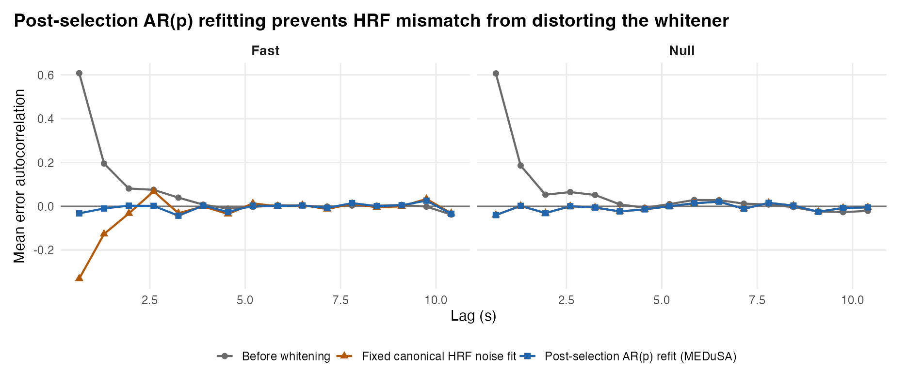
Fast vs. Null parcels) before whitening, after whitening under a misspecified fixed canonical HRF, and after MEDuSA’s post-selection \(\text{AR}(p)\) refit.
Choice point — Serial noise model (noise_model): Keep noise_model = "ar1" with evidence = "calibrated"; at fast TRs it automatically accommodates higher-order oscillatory physiological autocorrelation through \(\psi_1\)–\(\psi_4\) while collapsing cleanly to first-order \(\text{AR}(1)\) at slower TRs.
3.4 Recommended Settings
Putting all four substeps together on preprocessed NIfTI/fMRIPrep inputs:
library(medusa)
# 0. Stream preprocessed 4D NIfTI runs + fMRIPrep confounds & BIDS events
# (or call read_fmriprep_subject() to bundle BOLD, masks, confounds, and events in one call)
ts <- read_nifti_ts(
niftis = c(run1 = "sub01_run1.nii.gz", run2 = "sub01_run2.nii.gz", run3 = "sub01_run3.nii.gz"),
mask = "sub01_mask.nii.gz",
atlas = "schaefer200.nii.gz",
tr = tr
)
conf <- read_fmriprep_confounds(
c("sub01_run1_desc-confounds_timeseries.tsv",
"sub01_run2_desc-confounds_timeseries.tsv",
"sub01_run3_desc-confounds_timeseries.tsv"),
bold = ts,
strategy = "24p",
fd_threshold = 0.3,
motion_bandstop_bpm = c(12, 20), # optional respiratory notch for fast TRs (TR <= 1.0 s)
motion_filter_target = "fd_only"
)
# 1. Build the 3D physiological HRF manifold (~44 candidates, positive-lobe normalized)
candidates <- hrf_library(tr = ts$tr, preset = "medusa")
# 2. Cross-fit HRF shapes across runs and refit own-run AR(p) noise
hrf_fit <- estimate_crossrun_hrf(
bold = ts,
events = events,
kernel_grid = candidates,
nuisance = conf,
pooling = "graph", # or "parcel" for uniform ROI pooling
parcel_boundary = "soft",
amplitude_model = "trial",
noise_model = "ar1",
evidence = "calibrated",
selection_mode = "soft_average",
return_scores = TRUE
)| Argument | Recommended | Package Default | Summary of Role & When to Adjust |
|---|---|---|---|
hrf_library(..., preset) |
"medusa" |
"custom" (3 × 3 grid) |
Spans fast subcortical through slow cortical shapes with positive-lobe normalization (Substep 1.1). Use "canonical_27" when restricting to fixed-undershoot cortical delays. |
amplitude_model |
"trial" (modulated tasks) or "condition" |
"condition" |
"trial" captures zero-mean signed modulation during HRF scoring (Substep 1.2); "condition" is faster when events share a consistent sign. |
pooling & spatial_groups |
"graph" (parcel_boundary = "soft") for NIfTIs; "parcel" for homogeneous ROIs |
"voxel", NULL |
"graph" pools HRF and REML noise bilaterally along the in-mask cortical ribbon while respecting sulci and functional borders (Substep 1.3); "parcel" pools uniformly within nominal parcels. |
selection_mode |
"soft_average" |
"hard" |
Blends compatible candidates smoothly and shrinks weak-SNR regions toward column 1 (Substep 1.3). |
noise_model & evidence |
"ar1" & "calibrated" |
"ar1" & "calibrated" |
Fits the two-pass post-selection \(\text{AR}(1) \times \text{AR}(q)\) cascade (Substep 1.4) with calibrated \(F\)-test gating. |
motion_bandstop_bpm (in read_fmriprep_confounds) |
c(12, 20) ("fd_only") when \(\text{TR} \lesssim 1.0\text{ s}\) |
NULL |
Suppresses respiratory chest-wall pseudomotion in fast-TR FD censoring while keeping unfiltered 24p nuisance regressors (see below). Leave NULL at slower TRs (\(\text{TR} \ge 2.0\text{ s}\)). |
3.5 Practical Considerations, Special Regimes, and Diagnostics
3.5.1 Single-run sessions and resting/baseline runs
When a participant has only a single task run (length(bold) == 1L), estimate_crossrun_hrf() automatically partitions usable observations into contiguous temporal sub-blocks (3 blocks when \(n_{\text{valid}} \ge 120\), 2 halves when \(40 \le n_{\text{valid}} < 120\)), scores candidates on each sub-block against the full causal event design, checks cross-block compatibility, and returns a single continuous HRF for the intact run. Runs with zero task events (such as resting-state scans) are also accepted and receive the canonical reference HRF alongside pure-nuisance \(\text{AR}(p)\) noise estimates.
3.5.2 Respiratory motion filtering for fast-TR censoring
In fast-TR multiband acquisitions (\(\text{TR} = 0.60\text{--}1.0\text{ s}\)), volume realignment resolves normal breathing (\(12\text{--}20\text{ breaths/min} \approx 0.20\text{--}0.33\text{ Hz}\)): chest-wall motion perturbs the \(B_0\) field along the phase-encoding axis and produces rhythmic \(0.25\text{--}0.45\text{ mm}\) fluctuations in raw Power (2012) framewise displacement (FD) even when the head is still (Fair et al., 2020; Gratton et al., 2020). Censoring raw fast-TR FD at \(0.30\text{ mm}\) can fragment valid_rows into short islands and reduce downstream trial retention, whereas simply raising fd_threshold to \(0.60\text{ mm}\) misses genuine sub-millimeter head jerks.
read_fmriprep_confounds() (and read_fmriprep_subject()) addresses this cleanly by applying zero-phase forward-backward IIR filtering to the 6 rigid-body realignment parameters before computing FD:
- Choice of filter:
motion_bandstop_bpm = c(12, 20)applies a narrowband 2nd-order RBJ biquad notch (filtfilt) that removes the breathing band while preserving sharp step displacements on their original millimeter FD scale (pair with standardfd_threshold = 0.30). Alternatively,motion_lowpass_hz = 0.20applies a Butterworth low-pass filter (pair with a proportionally lowerfd_threshold = 0.15–0.20, following Gratton et al., 2020). - Keeping nuisance regressors unfiltered (
motion_filter_target = "fd_only"): Because standard fMRIPrep BOLD volumes retain real respiratory \(B_0\) signal fluctuations,"fd_only"filters motion only for FD censoring while keeping unfiltered24p/36pregressors in$nuisanceso Steps 1–2 project respiratory \(B_0\) variance out of BOLD. (At slower TRs near the Nyquist boundary or onBrainGnomesfiles that already carryframewise_displacement_filtered,read_fmriprep_confounds()adapts or reuses filtered FD automatically.)
Figure 3.10, Figure 3.11, and Table 3.3 compare these options on the Step 1 multiband schedule (\(\text{TR} = 0.65\text{ s}\), \(\sim 16\text{ BPM}\) breathing plus two true head jerks of \(0.47\text{ mm}\) and \(1.18\text{ mm}\) in Run 1): both motion_bandstop_bpm = c(12, 20) and motion_lowpass_hz = 0.20 with motion_filter_target = "fd_only" retain 98–99% of volumes and 100% of trials while censoring both true head jerks and recovering the true 0.035 observation noise SD.
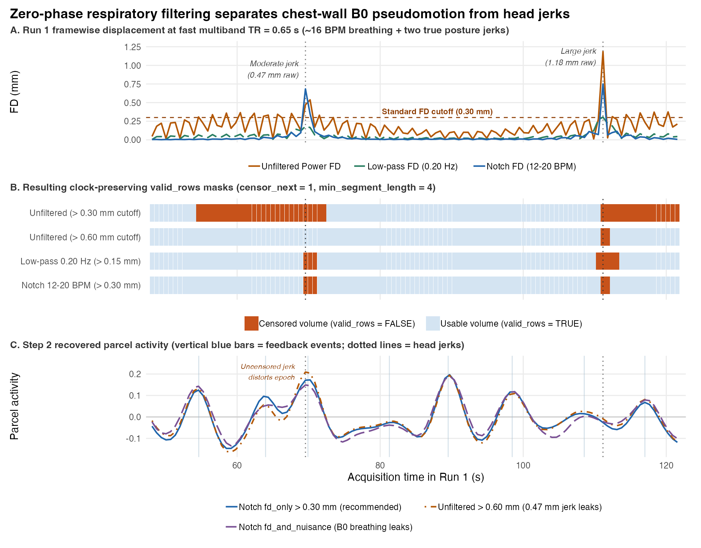
48–122 s): (A) Unfiltered Power FD vs. zero-phase Butterworth low-pass (0.20 Hz) and RBJ notch (12–20 BPM) FD across continuous \(\sim 16\text{ BPM}\) breathing and two genuine head jerks; (B) resulting clock-preserving valid_rows masks; (C) Step 2 recovered parcel activity across censoring regimes.
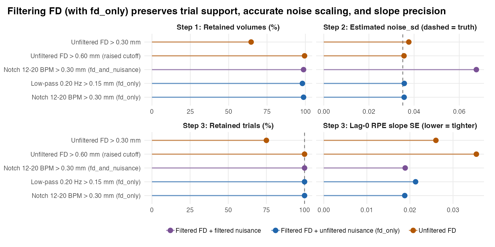
respiratory_fd_metrics.csv): retained acquisition volumes, Step 2 observation noise_sd recovery against generating truth (0.035), Step 3 trial retention after causal BOLD observability gating, and Step 3 lag-0 RPE slope standard error.
Show supporting code
knitr::kable(
resp_tbl[, c("regime", "pct_retained_trs", "median_segment_trs", "mean_fd_mm", "est_noise_sd", "pct_trials_retained", "median_trial_se", "rpe_beta_lag0", "rpe_se_lag0")],
col.names = c("Censoring Regime", "Retained TRs (%)", "Med. Seg. (TRs)", "Mean FD (mm)", "Est. noise_sd", "Retained Trials (%)", "Med. Trial SE", "Lag-0 Beta", "Lag-0 SE"),
digits = c(0, 1, 0, 3, 4, 1, 3, 3, 4),
row.names = FALSE
)TR = 0.65 s) FD censoring regimes (generating observation noise SD = 0.0350; generating lag-0 RPE slope = 0.500).
| Censoring Regime | Retained TRs (%) | Med. Seg. (TRs) | Mean FD (mm) | Est. noise_sd | Retained Trials (%) | Med. Trial SE | Lag-0 Beta | Lag-0 SE |
|---|---|---|---|---|---|---|---|---|
| Unfiltered FD > 0.30 mm | 64.6 | 56 | 0.165 | 0.0377 | 75 | 0.105 | 0.553 | 0.0260 |
| Unfiltered FD > 0.60 mm (ad-hoc raised cutoff) | 99.4 | 179 | 0.165 | 0.0355 | 100 | 0.083 | 0.559 | 0.0354 |
| Notch 12-20 BPM > 0.30 mm (fd_and_nuisance) | 98.8 | 111 | 0.018 | 0.0676 | 100 | 0.167 | 0.507 | 0.0189 |
| Low-pass 0.20 Hz > 0.15 mm (fd_only; Gratton 2020) | 98.1 | 142 | 0.040 | 0.0357 | 100 | 0.084 | 0.475 | 0.0213 |
| Notch 12-20 BPM > 0.30 mm (fd_only; recommended) | 98.8 | 111 | 0.018 | 0.0356 | 100 | 0.084 | 0.512 | 0.0188 |
3.5.3 Diagnostic checklist and scope handoff to Step 2
Before passing hrf_fit to deconvolve_crossrun_hrf() (Step 2):
- Check cross-fitting provenance: Confirm
hrf_fit$training_runslists non-target runs \(s \neq r\) and reviewhrf_fit$signal_status. - Plot realized waveforms (
hrf_fit$selected_kernels): Undersoft_average,selections$kernel_indexidentifies only the top-weight library column, whereasselected_kernelsshows the actual composite HRF used in Step 2. - Check
hrf_fit$noisefor stationarity boundary hits: Widespread \(\hat{\rho} = 0.90\) estimates typically point to unmodeled scanner drift, uncensored motion spikes, or omitted task events. - Scope boundary: Step 1 estimates the forward neurovascular filter and serial noise structure without modifying
boldor evaluating behavioral trial hypotheses; continuous latent signal reconstruction begins in Step 2.
Mathematical Details & Reproduction
- Cross-fitted evidence pooling: For candidate \(m\) on training run \(s \neq r\), whitened nuisance-orthogonalized BOLD \(y_{s,\perp}\) is regressed onto whitened candidate design \(X_{s,m,\perp}\) (rank \(d_{s,m}\) over \(n_s\) valid rows), yielding adjusted partial \(R^2_{s,m} = 1 - (1 - R^2_{s,m})\frac{n_s - p_Z}{n_s - p_Z - d_{s,m}}\). Across training runs, scores are weighted by effective degrees of freedom and checked for sign/peak compatibility (
stability). - Soft-average shrinkage: Compatible candidates within
score_marginreceive Boltzmann weights \(w_m \propto \exp(\Delta R^2_m / \tau_{\text{SE}})\) blended with column 1 ((1 - \eta) e_1 + \eta w), where Empirical-Bayes shrinkage \(\eta \in [0, 1]\) approaches 0 as calibrated task \(F\)-statistics weaken toward theevidence_alphathreshold. - Exact gapped covariance: When
valid_rows[[r]]masks interior frames, AR estimation restricts lag products strictly within contiguous unmasked runs of frames, while Step 2’s whitener \(W_r\) inverts the exact stationary Toeplitz submatrix \(\Sigma_{\text{AR}}[I_r, I_r]\) on retained timestamps \(I_r\) so multi-TR scrub gaps decay correlation by \(\gamma(|t_a - t_b|)\). - Zero-phase respiratory IIR filtering: For sampling rate \(f_s = 1/\text{TR}\) and stopband \([f_1, f_2] = \text{BPM}/60\) (\(f_0 = (f_1 + f_2)/2\), \(\Delta f = f_2 - f_1\), \(Q = f_0/\Delta f\), \(\omega_0 = 2\pi f_0/f_s\), \(\alpha = \sin\omega_0/(2Q)\)),
read_fmriprep_confounds()designs the RBJ biquad notch transfer function \(H(z) = \frac{1 - 2\cos\omega_0 z^{-1} + z^{-2}}{(1 + \alpha) - 2\cos\omega_0 z^{-1} + (1 - \alpha)z^{-2}}\) (or bilinear-warped Butterworth poles formotion_lowpass_hz) and applies forward-backward Direct Form II Transposed filtering (filtfilt) with steady-state initial conditions and reflection padding to all 6 realignment parameters before computing Power (2012) FD.
Step 1 simulation script · Figure script · Selection table · Noise table · Respiratory FD table